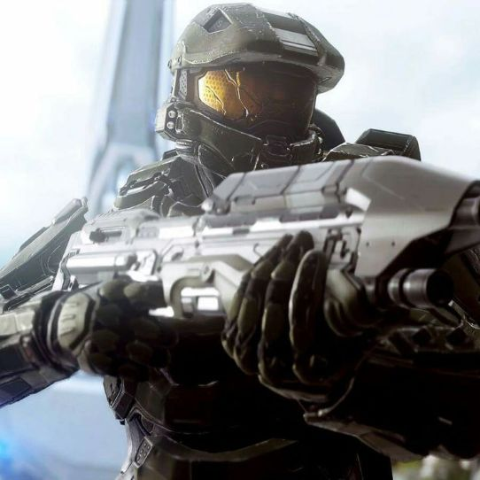
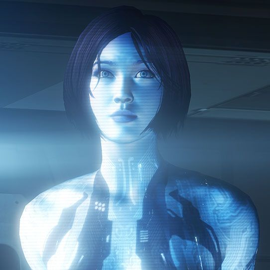
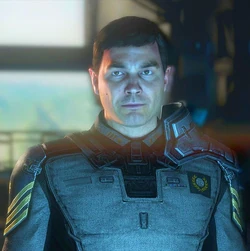
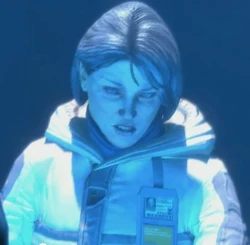
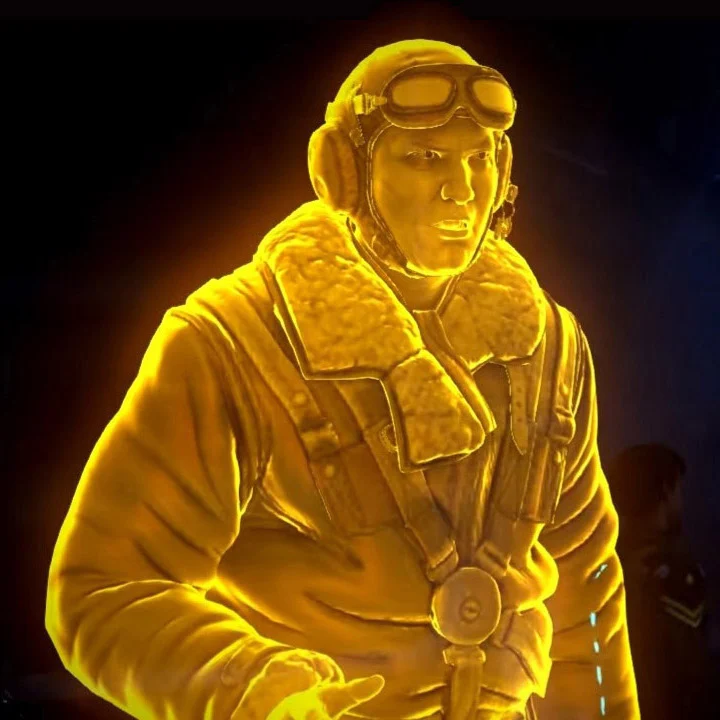

Junto con su Equipo de Asalto Osiris, que incluye a los Spartans Vale, Tanaka y Buck, Locke se
dispone a cazar a la presa más peligrosa
de todas: el Jefe Maestro. Mientras numerosas colonias sufren ataques simultáneos en "Halo 5:
Guardianes", el Jefe Maestro desaparece y
nadie sabe si está en apuros o si se ha vuelto rebelde
Personajes principales de HALO 5
| Jefe Maestro |
| El Jefe Maestro tiene carácter de héroe frío y aterrador. Cuando aparece en batalla,
sus enemigos advierten que
será casi imposible ganar. Él nunca habla a menos que sea necesario y es raro que se
exprese. Usualmente Cortana
se expresa por él |
|  |
| Cortana |
| Cortana posee una personalidad inteligente y vivaz, además de un buen sentido del
humor. Su lealtad hacia los
humanos está programada, pero ella dice que su lealtad es genuina, tal vez por el
hecho de tratarse de un clon de
un cerebro verdaderamente humano |
|  |
| Comandante Thomas J. Lasky |
| El Capitán Thomas J. Lasky es un oficial del UNSC que sirvió en la Guerra
Humano-Covenant y en los
Conflictos de la Post-Guerra. Desde 2552, el entonces Comandante Lasky sirvió como
Oficial Ejecutivo del Capitán Andrew Del Rio a bordo de la UNSC Infinity hasta Julio
de 2557, cuando Del Rio fue relevado del mando justo antes del asalto Prometeo a la
Tierra. Actualmente es el Capitán de la UNSC Infinity y máxima autoridad en dicha
nave. |
|  |
| Doctora Catherine Halsey |
| Catherine Elizabeth Halsey, MD, PhD es una científica
clave de la Oficina de Inteligencia Naval, mejor conocida por su trabajo en el
Programa SPARTAN-II, su diseño y creación de Inteligencias Artificiales y por el
diseño de la Armadura Potenciada de Asalto MJOLNIR. Sirvió como científica de la ONI
desde 2515 hasta 2552, cuando se le ascendió al puesto de Científica en Jefe, que
ocuparía hasta el final de la Guerra Humano-Covenant. |
|  |
| Roland |
| Roland es una Inteligencia Artificial construida por el UNSC. Es el Director de Nave de la UNSC Infinity. |
|  |